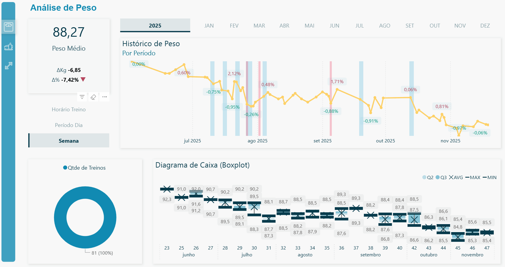
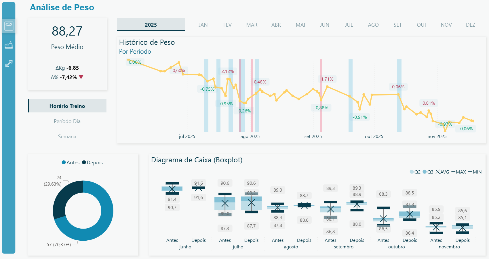

About Me
I’m a data-driven problem solver passionate about turning complex information into actionable insights. I specialize in modeling, automation, and analytics to build scalable solutions that reduce costs, improve decision accuracy, and accelerate business results.
Experience
Business Intelligence Analyst
GPC Química
Aug 2024 – Present | Araucária, Paraná, Brazil
- Delivered financial and operational analyses that supported executive decision-making, including income statement modeling, cash flow forecasting, and project feasibility evaluations that guided investment priorities.
- Led automation of forecasting processes, standardizing short-term revenue and sales models that improved prediction accuracy and reduced preparation time for business reviews.
- Built the company’s annual budget model, integrating Power BI dashboards and SQL-based data pipelines that provided real-time visibility into business performance.
- Implemented automated ETL workflows that eliminated repetitive manual tasks, saving approximately two days per week and increasing data reliability.
- Created financial dashboards and storytelling visuals that became key tools in board meetings, enabling data-driven decision-making across departments.
Skills/Technologies: SAS, PySpark, DataBricks, Scala, Power BI, SQL Server, Financial Analysis, Forecasting, ETL, Tableau.
Data Science
GPC Química
Oct 2023 – Aug 2024 | Araucária, Paraná, Brazil
- Redesigned the NIR analysis workflow, reducing processing time by 98% and enabling faster turnaround for sample validation.
- Developed AI models that automated routine laboratory steps, reducing manual effort by 10% and improving data consistency across experiments.
- Applied Design of Experiments (DoE) methodologies to accelerate new resin validation and enhance R&D efficiency.
Skills/Technologies: PySpark, DataBricks, ETL, Python, Process Optimization, Experimental Design.
Software Engineer
Brick Abode
Apr 2022 – Mar 2023 | Remote (U.S.)
- Contributed to the development of the Epic Cash cryptocurrency platform, focusing on automation, feature creation, and software reliability.
- Resolved critical system failures such as coin loss and implemented automated testing workflows to prevent recurrence of these issues.
- Enhanced system performance and scalability, reducing transaction time by 50% and improving user experience in high-concurrency environments.
Skills/Technologies: Rust, PySpark, Blockchain, Test Automation, GitHub, Concurrency, Log Analysis.
Data Analyst – People Analytics
Tereos
Aug 2021 – Apr 2022 | Brazil
- Developed turnover KPIs and automated data workflows to give HR leaders real-time insights into workforce trends and attrition risks.
- Created Power Apps for proactive monitoring of performance indicators and risk alerts, enabling faster responses to operational challenges.
- Led the migration of Tableau reports to Power BI, improving report governance and usability for HR managers.
Skills/Technologies: SAS, DataBricks, Power BI, Scala, ETL, SQLite, Power BI, Tableau, Predictive Analytics.
Education
Bachelor, Applied Mathematics
Federal University of Paraná
February 2018 - November 2024
Skills
Technical
- Power BI / Tableau
- Advanced Excel
- Python
- Rust
- SQL
- ETL Processes
- Artificial Intelligence
- Machine Learning (TensorFlow, XGBoost)
Statistical, Math and Engineering
- Applied Mathematics
- Exploratory Data Analysis
- Data Pipelines
- Process Optimization
- Data Automation
- Software Engineering
Analytical
- Data Storytelling
- KPI Development
- Statistical Analysis
- Data Visualization
Soft Skills
- Proactive
- Detail-Oriented
- Effective Communication
- Leadership
- Cross-functional Collaboration
- Project Ownership
Languages
- Portuguese – Native
- English – Fluent
Projects
Note: Better presentenation are available in the online version of this portfolio.
Power BI: Weight Analysis


Developed a Power BI solution that enhanced data traceability and delivered actionable insights through automated pipelines and time-based analysis, resulting in faster operational decision-making.
AI for Breast Cancer Image Classification
GitHub RepositoryCollaborated with doctors and medical researchers to build a neural network model that identifies high-density cancer cell regions in histological images of breast tissue.
The project reduced manual screening time by prioritizing images for expert review, improving diagnostic workflow efficiency by nearly 50%.
Technologies: Python, TensorFlow, OpenCV, Scikit-learn, Google Colab.